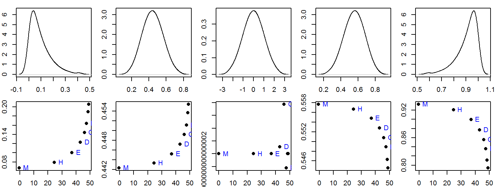
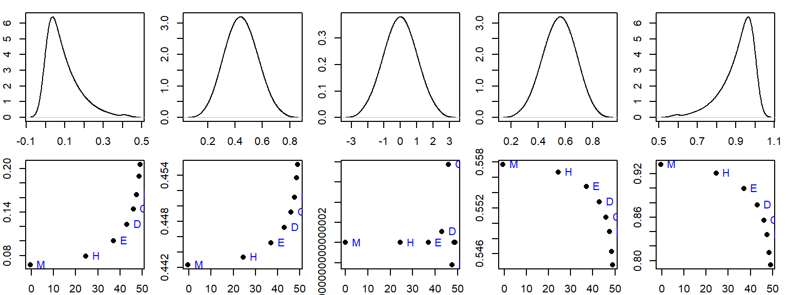

Letter value summaries
This tutorial makes use of the following R package(s): dplyr.
Introduction
The boxplot is a five number summary of a batch of values that gives us a handle on the symmetry (or lack thereof) of the data. The five numbers consist of the median, the inter-quartile values and the upper and lower adjacent values (aka whiskers). The letter value summary was introduced by John Tukey and extends the boxplot’s 5 number summary by exploring the symmetry of the batch for depth levels other than the half (median) or the fourth (quartiles).
Constructing the letter value summaries
Let’s start with a simple batch of numbers: 22, 8, 11, 3, 26, 1, 14, 18, 20, 25, 24.
Order the values
First, we order the numbers from lowest to highest.

Letter value summary
Find the median (M)
Next, we find the median. It’s the location in the enumerated values that splits the batch into two equal sets of values. If the number of values is odd, then the median is the value furthest from the ends. If the number of values in the batch is even, then the median is the average of the two middle values, each furthest from its end. A simple formula to identify the element number (or depth) of the batch associated with the median is:
\[ depth\ of\ median = \frac{n + 1}{2} \]
where \(n\) is the number of values in the batch. In our example, we have 11 values, so the the median is (11 + 1)/2 or 6; it’s the 6th element from the left (or the right) of the sorted values.

Letter value summary
If our batch consisted of an even number of values such as 10, the the median would be the 5.5th value which does not coincide with an existing value. This would require that we find the 5th and 6th element in the batch, then compute their average to find the median.
The median is the value furthest from the extreme values; it’s said to have the greatest depth (e.g. a depth of 6 in our example). The minimum and maximum values have the lowest depth with a depth value of 1, each.
Find the hinges (H)
Next, we take both halves of our batch of ordered numbers and find the middle of each. These mid points are referred to as hinges. They can be easily computed by modifying the formula used to find the median: we simply substitute the value \(n\) with the depth associated with the median, \(d(M)\) (i.e. the median becomes an extreme value in this operation).
\[ depth\ of\ hinge = \frac{d(M) + 1}{2} \]
In our working example, the depth of the median is 6, therefore the depth of the hinge is (6+1)/2 = 3.5. So the hinge is the 3.5th element from the left (or right) of the first half of the batch and the 3.5th element from the left (or right) of the second half of the batch. Since the depth does not fall on an existing value, we need to compute it using the two closes values (depth 3 and depth 4). This gives us (8+11)/2=9.5 for the left hinge and (22+24)/2=23 for the right hinge.
Letter value summary
If our batch consisted of even number of values, we would need to drop the ½ fraction from depth of the median before computing the depth of the hinge. For example, if we had 10 values the depth of the median would be 5.5 and the depth of the hinge would be calculated as (5+1)/2.
Note that the hinges are similar to the quartiles but because they are computed differently, their values may be slightly different.
Find the other letter summaries (E, D, C, B, A, etc…)
SO far, we’ve found the median (M) and the hinges (H). We keep computing the depths for each outer group of values delimited by the outer extreme values and the previous depth. For example, the mid-point of the outer quarters gives us our eights (E):
\[ depth\ of\ eights = \frac{d(H) + 1}{2} \]
or, after dropping the ½ fraction from the depth of the hinge, (3+1)/2=2.
This continues until we’ve exhausted all depths (i.e. until we reach a depth of 1 associated with the minimum and maximum values). Once past the eight, we label each subsequent depths using letters in reverse lexicographic order starting with D (for sixteenth) then C, B, A, Z, Y, etc…
In our working example, we stop at a depth of D (though some will stop at a depth of two and only report the extreme values thereafter).
The mids and spreads
Once we’ve identified the values associated with each depth, we compute the middle value for each depth pair. For example, the middle value for the paired hinges is 16.25; the middle value for the paired eights is 14; and so on. We can also compute the spread for each depth by computing the difference between each paired value.

Letter value summary
The letter value summary is usually reported in tabular form:
| letter | depth | lower | mid | upper | spread |
|---|---|---|---|---|---|
| M | 6.0 | 18.0 | 18.00 | 18.0 | 0.0 |
| H | 3.5 | 9.5 | 16.25 | 23.0 | 13.5 |
| E | 2.0 | 3.0 | 14.00 | 25.0 | 22.0 |
| D | 1.5 | 2.0 | 13.75 | 25.5 | 23.5 |
| C | 1.0 | 1.0 | 13.50 | 26.0 | 25.0 |
A custom function is available on the course website that will compute the letter value summaries. To access the function (named lsum) source the R es218.R script as follows.
source("http://mgimond.github.io/ES218/es218.R")Then to generate the letter summary function for a batch of values x,
x <- c(22, 8, 11, 3, 26, 1, 14, 18, 20, 25, 24)
lsum(x) letter depth lower mid upper spread
1 M 6.0 18.0 18.00 18.0 0.0
2 H 3.5 9.5 16.25 23.0 13.5
3 E 2.0 3.0 14.00 25.0 22.0
4 D 1.5 2.0 13.75 25.5 23.5
5 C 1.0 1.0 13.50 26.0 25.0Interpreting the letter value summaries
Let’ explore the letter summary values for five simulated distributions. We’ll start with a strong right-skewed distribution then progress to a strong left-skewed distribution with a Gaussian (normal) distribution in between.

Note the shape of the letter summaries vis-a-vis the direction of the skew. Note too that the letter value summary plot is extremely sensitive to deviations from perfect symmetry. This is apparent in the middle plot which is for a perfectly symmetrical (Gaussian) distribution. The reason has to do with machine precision: the range of values along the y-axis is extremely small, \(10^{-16}\), which is the lower limit of the computer’s precision.
This sensitivity has its rewards. Note the second plot from the left and the right. The asymmetry is barely noticeable in both distributions, yet the letter value summaries does a great job in identifying the slight asymmetry. Even the boxplots cannot convey this asymmetry as effectively.

This is not to say that just because asymmetry is present in the letter summary values we necessarily have a problem; but it may warrant further exploration before proceeding with the analysis–especially if statistical procedures warrant it.
 Manny Gimond (2019)
Manny Gimond (2019)